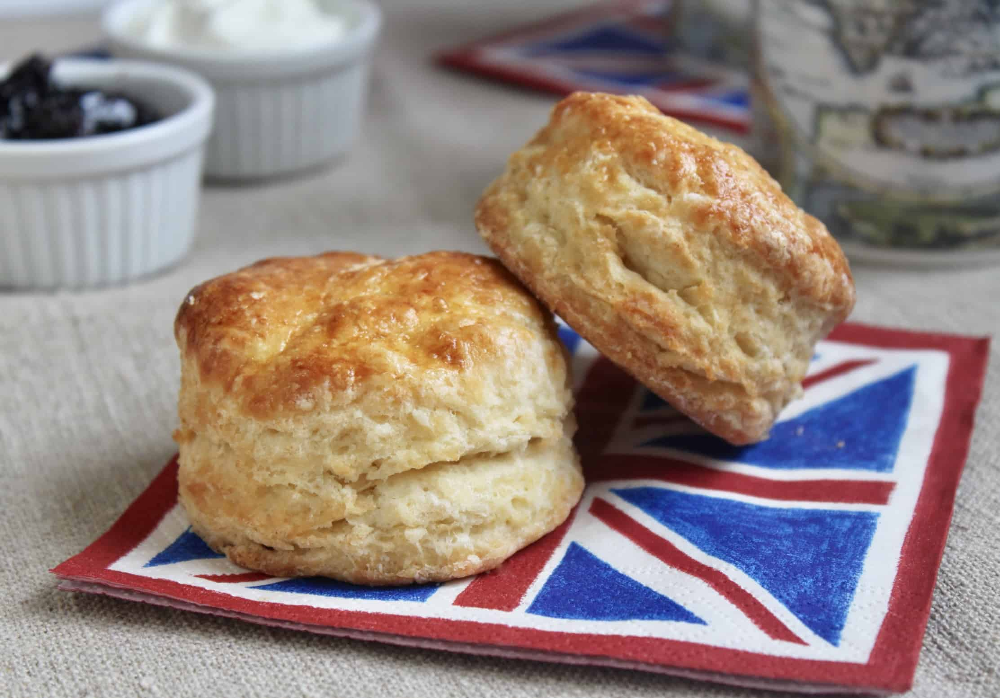

Scones
recipe produces a lovely, light scone, typical of those served at afternoon teas all across the ...

Ingredients
2 cups (284 g) all-purpose (plain) flour
2 tsp baking powder
2 Tbsp sugar
a pinch of salt
1/3 cup (70 g) salted butter (cold)
A scone is a baked good, usually made of either wheat or oatmeal with baking powder as a leavening agent, and
baked on sheet pans. A scone is often slightly sweetened and occasionally glazed with egg wash.[1] The scone is
a basic component of the cream tea. It differs from teacakes and other types of sweets that are made with yeast.
Scones were chosen as the Republic of Ireland representative for Café Europe during the Austrian Presidency of
the European Union in 2006, while the United Kingdom chose shortbread.The origin of the word scone is obscure
and may derive from different sources. That is, the classic Scottish scone, the Dutch schoonbrood or
"spoonbread" (very similar to the drop scone), and possibly other similarly named quick breads may have made
their way onto the British tea table, where their similar names merged into one. Thus, scone may derive from the
Middle Dutch schoonbrood (fine white bread), from schoon (pure, clean) and brood (bread),[9][10] or it may
derive from the Scots Gaelic term sgonn meaning a shapeless mass or large mouthful. The Middle Low German term
schöne meaning fine bread may also have played a role in the origination of this word. And, if the explanation
put forward by Sheila MacNiven Cameron is true, the word may also be based on the town of Scone (/skuːn/
(listen)) (Scots: Scuin, Scottish Gaelic: Sgàin) in Scotland, the ancient capital of that country – where
Scottish monarchs were crowned, and on whose Stone of Scone the monarchs of the United Kingdom are still crowned
today